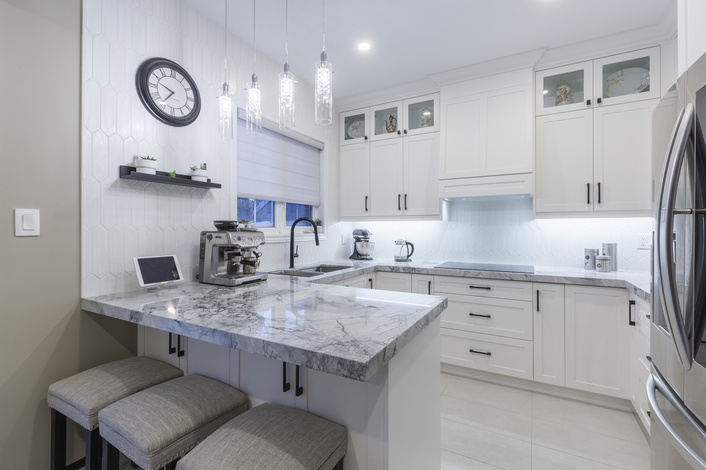
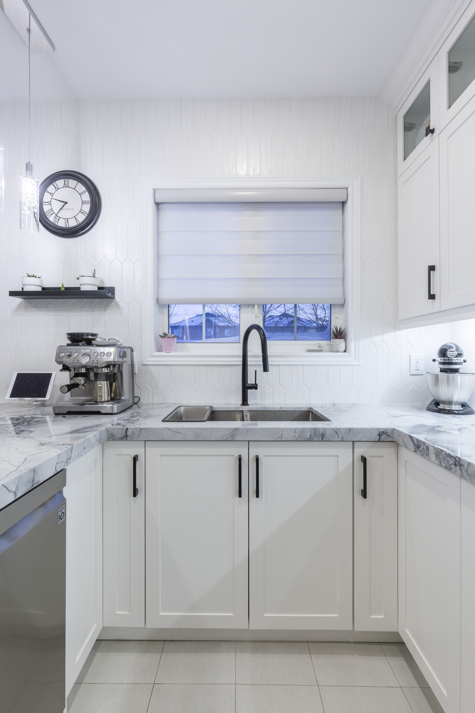

Read the references beneath the image.
We separate the useful signals—proportion, warmth, contrast, storage, openness, detail—from the parts that do not fit the home.
Kitchen Design · Toronto & GTA
Mariani uses references as evidence of what you notice—not as a catalogue to copy. The design begins with the home, the routines, and the change the kitchen needs to make.
Begin the design conversation
Most saved kitchens contain several different ideas: a colour, an island proportion, a warm material, an opening detail, or an uncluttered composition. Design is the work of understanding why those details matter, testing them against the room, and making one coherent answer.
We separate the useful signals—proportion, warmth, contrast, storage, openness, detail—from the parts that do not fit the home.
Light, ceiling height, windows, circulation, appliances, cooking, cleanup, gathering, and connected rooms shape the plan.
Drawings and material decisions bring the layout, elevations, cabinet interiors, surfaces, openings, and light into one buildable direction.

References are welcome
You do not need to identify a style or prepare a brief. We will begin with what you notice and what the current kitchen should make better.